¶ For some reason everyone seems to think tuning a carb is just real easy. Change a jet or two and boom, your there. Yeah, right! There are quite literally millions and millions of jet combinations. A rough check on Bing carbs shows there are at least 13,860,000 different combinations of jets. If you are going to change carbs you'd better be prepared to spend some time and money on the job.
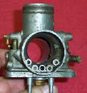 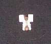
OK, let's go over the different systems in the carb and see what they do.
- Fuel level.
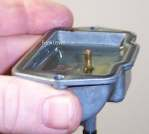
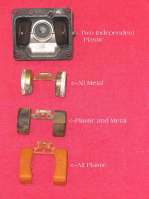
The fuel level is controlled by the fuel floats and the fuel float valve. The floats are hollow or made of something that will float on gasoline, such as cork. Part of the float presses against the float valve, sometimes called a needle and seat. Most times the part of the float that touches the float valve needle is bendable so you can adjust the level of the fuel in the float bowl. All plastic floats are not adjustable. If this level is way too high, gas can leak out the carb overflow tube or into the engine. If fuel gets into the engine it will thin out the engine oil, ruining it's ability to lubricate. This will, sooner or later, blow up your engine! If a full tank of gas in the evening turns into a half tank by morning, check your oil. If it's thin and smells like gas, change it and replace your float valve and/or check your fuel level. If the oil is OK, check under the overflow tube. If it's OK, then check where you are parking your bike 'cuse someone is walking away with your gas!If your fuel level is just a bit high, the mixture will tend to be a bit rich. If it's low, the mixture will tend to be a bit lean. This is because a high level takes less vacuum to suck fuel into the engine and a low level takes more vacuum to do the same.
- Pilot or idle jet system.
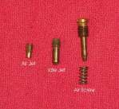
The idle jet controls the idle and on up to quarter throttle, give or take a bit. On some carbs, like Mikuni there is an air jet too. In conjunction with the idle jet there is an idle jet air screw. This screw leans or richens the fuel mixture for a smooth idle and on up to one quarter throttle. From the idle jet, there are little passages cast into the carb that lead to holes just in front of the throttle valve or plate. There can be just one hole or there can be several, depending on the carb design. They effect the mixture as long as the vacuum, in the venturi, is over them. As the throttle opens further, the vacuum moves to the needle jet and jet needle. The Throttle Valve.
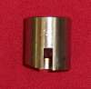
The throttle Valve is the big slide that opens and closes your throttle has a bevel angle cut in one side of the big round (can be flat, too) slide, toward the air cleaner. This angle comes in several sizes and helps control the fuel mixture from idle to about 35% open throttle.
Needle Jet.
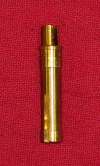
This jet doesn't really even look like a jet, but it is! It controls the fuel mixture from 15% to 60% open throttle. It sets in the center of the carb, right over the Main Jet.
Jet Needle.
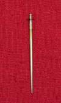
This is the needle that rides in the throttle slide and goes into the needle jet. This Jet Needle controls the fuel mixture from 20% to 80% open throttle. It can come in many different sized tapers. Sometimes, one needle can have several tapers on it. The top end of the Jet Needle has grooves cut in it, usually five, and you can move the little clip up (which moves the Jet Needle down in relation to the Throttle Valve and Needle Jet) to lean the mixture or down (moving the Jet Needle up in relation to the Throttle Valve and Needle Jet) to richen the mixture. Most late model bikes have needles with only one groove cut in them. This is so you can't richen the mixture, thereby keeping the EPA happy.Main Jet.
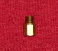
This jet controls the fuel mixture from 60% to 100% open throttle.
We want nice clean acceleration from idle to full throttle, with no stumbling or flat spots. This can be quite a tall order if we are starting with a new carb. Actually, it can be a real challenge to get things to carburate right after something as simple as an exhaust pipe change.
Now, I wish I could tell I'm the great carb man, but, well... no one has ever been dumb enough to hire me to really work over a carb. Well, there was that one time with that Kaw 650 and aftermarket pipes. It had some kind of weird stock carbs that looked like Mikunis but really were not. It had TDK or KDT or DTK, something like that, carbs. It had aftermarket exhaust pipes and was running too lean, and stumbled at one point under acceleration. Worthless pig! The jet needles where not adjustable, so I put little washers under the needle clip, to raise the needles. The main jet only came in one size, so I drilled it out with ity-bity, expensive, jet drills. I could move the miss around, but I could not get rid of it. From the beginning I told the guy it wouldn't work and that he was wasting his money, and that at the least we needed carbs we could get parts for, but nooo. Just rise the needles, drill the jets he said... $200 later he finally gave up. I guess I shouldn't complain, I did get paid... but!
But you want to try it, don't you? OK, the drill really isn't that hard. Simply run the engine at whatever throttle opening you want to test, for a mile or so, and look at the spark plug. Is the spark plug reading lean or rich? Now look for the jet that controls that particular throttle opening and exchange it for a richer or leaner one. Now that doesn't sound very hard, does it? Oh yes, the throttle transition from one jet to the next must be smooth too! Go back over the areas that each jet controls. They overlap each other. Some a little, some a lot. Make sure you have a good selection of jets!
Most carb manufacturers have tables of specifications on the jet needles and needle jets, and other jets that you will find very useful. With these specs you can make a better guess as to what jet will work best. Some places use motorcycle dynamometers for testing.
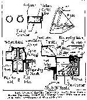
Anyway, what I'm trying to get over to you is that just because your buddy said he got new carb, changed a jet or two and now his bike gets 100 miles per gallon and has double the horse power, doesn't mean you can too. It just might require a lot more work than you bargained for.
Look on the bright side. Carbs used to be real simple at the turn of the century, but they didn't work as good as today's carbs.
Oh, one last thing, seeing how we are talking carb theory. When an engine is cold, like when you first start it up. It doesn't evaporate the gas well. Liquid gas does not burn, so you have to put in lots of gas, because a lot of it does not vaporize. The choke helps the carb to put into the engine a very rich mixture, and at least some of that mixture will vaporize and burn.
I had one guy tell me that the reason for a rich mixture when starting was so the pistons would be lubed by the raw gas and spin the engine over easier so it would start! He felt very strongly about this, so I didn't say a thing. Like the Bible says, don't cast your pearls before swine. (Matthew 7:6)
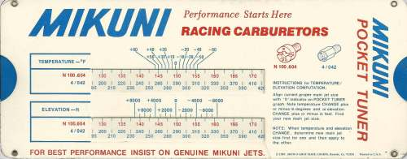
For a PDf file of the above Mukuni Pocket Tuner click HERE 5,000 KB
Print it out on card stock, cut it out, staple it together and it will help you figure out Mikuni Main Jets.
Amal Tuning Guide in PDF 557 KiloBytes Make your own Tuning Wheel |
Amal Monobloc Tuning Guide in PDF 2,610 KiloBytes |
Here are some Carb Manuals that might help.
Dellorto Tuning Guide 10,212 KB
Dellorto Tuning Guide 2 655 KB
But you want more, don't you? So click on the Carburetor to learn more then you will ever want to know about the inner workings of Carburetors.
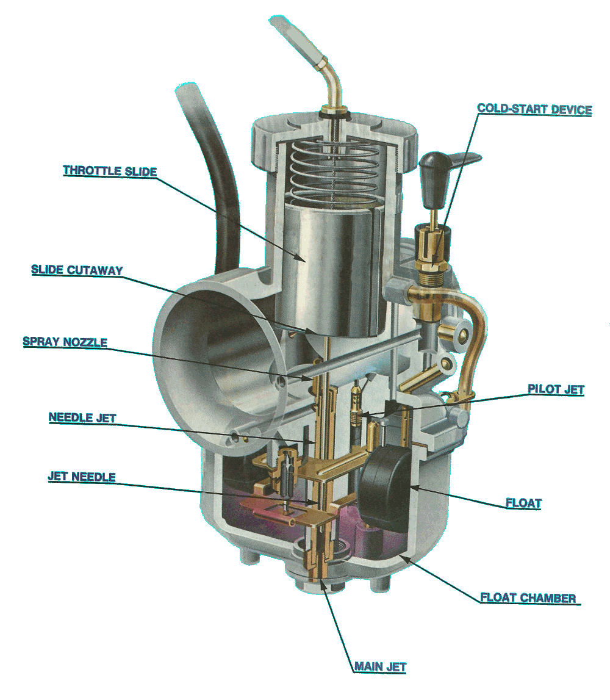

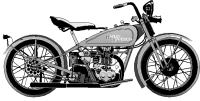 |
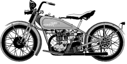 |
Copyright © 1999-2015 dansmc.com. All rights reserved.